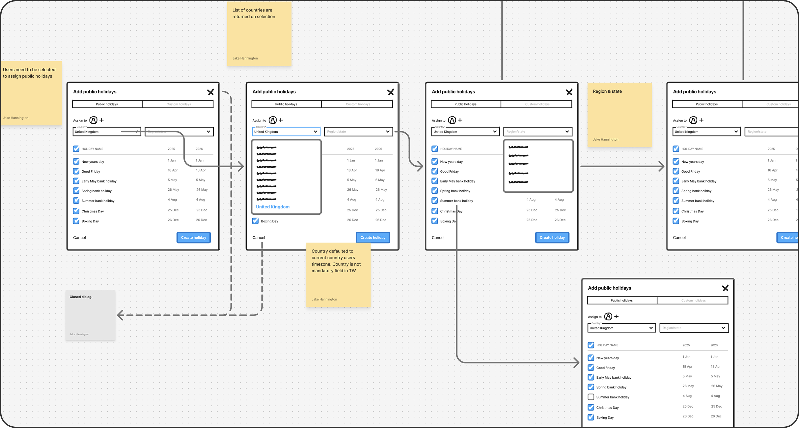
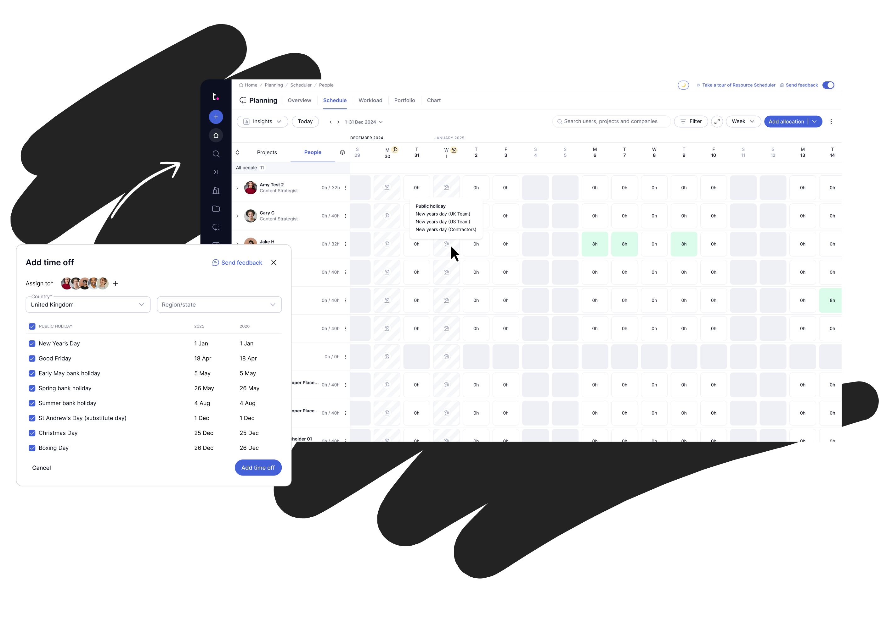

Public holidays
Solving availability to restore planning confidence

Quick read
Project overview
Accurate availability data is foundational to planning, but public holidays were not managed at a system level. Teams relied on manual entries that scaled poorly and became very time consuming, introduced hidden risk, manual friction and undermined confidence in scheduling decisions.
I led the design of a system-wide public holidays and time-off solution that enabled bulk management, automated recurrence, and consistent availability logic across the product — significantly reducing manual effort and improving planning accuracy.
Responsibilities
Discovery, research, strategy, design, metrics
Target users
Operations Managers, Resource Planners and Team Leads
Adoption
63% of all accounts scale accounts adopted the public holidays feature within the first few months
Outcome
Significant decrease in manual time off entries due to automated public holiday booking
Problem statement
Planning systems break down when availability can't be managed at scale.
Public and company-wide holidays were managed through manual, individual updates. Planners had to apply unavailable time one person at a time, repeat the process across teams and regions, and reapply it year after year.
This approach increased cognitive load, introduced errors, and made availability data unreliable. As a result, planning resources in the schedule view couldn't be fully trusted, forcing users to cross-check external calendars before making decisions and putting project timelines at risk.
Current known pains
- Planning views could not be fully trusted
- Project timelines were exposed to hidden unavailability
- Planners relied on external calendars to validate schedules
- Cognitive load increases — users must remember who has already been updated
- Errors become more likely — missed users lead to inconsistent availability data
- Scalability suffers — workflows don't adapt as organisations grow

Discovery & user testing
Validating the right problem.
Building the right thing.
I started by asking a few questions about public holidays to understand current behaviours and pain points, then introduced a short task and scenario to observe how people book and plan around public holidays.
The goal of the discovery was to confirm whether a system-level public holidays feature could meaningfully reduce manual effort and improve planning accuracy without introducing unnecessary complexity.
Based on early insights, I quickly ideated on a proposed solution and ran an unmoderated concept test using Lyssna to evaluate the idea. The test captured both qualitative feedback and quantitative signals.
This allowed me to rapidly validate the concept's value, clarify expectations, and refine scope before moving further into design.
Insights
- 97% of participants agreed the concept would reduce manual effort when managing public holidays
- 88% of participants found the concept met all their needs
- Manual holiday management did not scale and was a source of ongoing friction
- Applying public holidays at a company or team level delivered the most value
- Clear visibility in planning views mattered more than advanced configuration
- Automation created a strong foundation for future improvements
- Users had some desire to eventually add repeating custom holidays


Solution
Design & Build
User feedback & discovery directly influenced how the solution was shaped, sliced, and delivered. Rather than moving straight into build, I used the research and an impact-effort matrix to scope the first iteration of the feature.
I ran stakeholder walkthroughs to share early direction, gather feedback, and keep key partners aligned throughout the process. In parallel, I shared the research findings to the wider team to keep focus on the core user needs and problems we were solving.
Once scope was agreed and technical constraints were understood, I moved into high-fidelity design using the existing design system, using only reusable patterns already in the system. Without the need for new components, engineering overhead was significantly reduced, allowing the team to move quickly from specification to implementation.
Alignment and goals
Clear agreement on scope and priorities for initial release
Stakeholder playback
Stakeholder alignment with continuous feedback loop
A common vision
Playback of the research findings and the direction for v1 release

Metrics
Defining success for a low-frequency, high-impact feature
Because public holidays are typically configured once and then relied on over time, success wasn't measured by repeat usage. Instead, we focused on indicators of lasting value: reduced manual time entries, successful initial setup, and sustained behaviour change. Defining these success metrics upfront allowed us to evaluate the feature's impact without over-optimising for engagement. As a result, we saw a significant decrease in manual time-off entries, a high success rate for creating public holidays, and more accurate team availability data.
58%
Reduced manual time entries
Between Q2 and Q3 all manual time entries were reduced.
85%
Task success rate
Minimal friction setup utilising smart defaults and familiar system patterns
Accurate data
Team availability
Improved team availability and data accuracy with repeatable Public time off.
Outcomes
Learnings and reflection
Following release, we saw a clear behavioural shift away from manual unavailable-time entries toward system-level public holiday management. Although full metric coverage took time to mature, adoption patterns and user behaviour confirmed that the feature was solving the intended problem.
What changed
- Manual entry of public holidays reduced significantly
- Planning views became more reliable and required less cross-checking
- Public holidays were treated as a one-time setup rather than ongoing work
What I learned
- Designing for scale often means prioritising simplicity over flexibility
- Clear framing early on made it easier to align stakeholders and avoid scope creep
- Reusing existing system components can dramatically improve delivery speed without compromising quality
Defining success upfront helped focus the team on outcomes rather than outputs. If revisiting this work, I would look to extend the foundation further into areas such as calendar integrations and more advanced global holiday scenarios, building incrementally on the system-level approach established here.